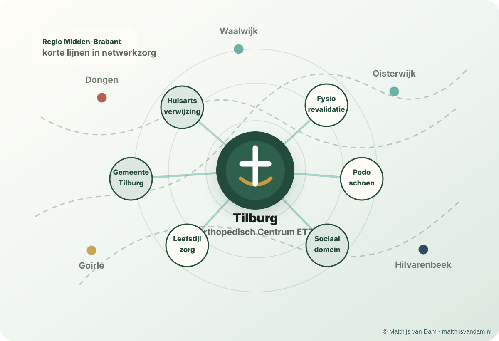

Twijfel over verwijzen
Bijvoorbeeld bij voet-, enkel- of knieklachten waarbij de vraag is of eerstelijnsbehandeling, beeldvorming of verwijzing passend is.
Voor professionals
Voor huisartsen, fysiotherapeuten, podotherapeuten en andere medici in de regio Tilburg die laagdrempelig willen afstemmen over orthopedische vragen. Voor verwijzingen, afspraken en lopende patiëntenzorg blijven de officiële routes van het Orthopedisch Centrum ETZ leidend.

Praktisch samenwerken
Deze pagina is geen verwijsprotocol en geen patiëntportaal. Hij is bedoeld om de praktische lijn met de orthopedie laagdrempelig te houden, vooral wanneer een korte professionele vraag kan helpen om de juiste vervolgstap te kiezen.
Bijvoorbeeld bij voet-, enkel- of knieklachten waarbij de vraag is of eerstelijnsbehandeling, beeldvorming of verwijzing passend is.
Bij vragen over conservatieve mogelijkheden, operatieve opties, verwachtingen of timing binnen de zorgroute.
Bij knieartrose en leefstijlgerelateerde gewrichtsklachten is afstemming met huisarts, fysiotherapie en andere ondersteuning vaak belangrijk.
Voor bredere vragen over regionale samenwerking, onderwijs of advies op projectbasis is er een aparte adviespagina.
Korte lijn
Huisartsen, fysiotherapeuten, podotherapeuten en andere medici kunnen drs. van Dam via Doctolib Connect toevoegen voor laagdrempelig professioneel overleg over voet-, enkel-, sport- en knievragen. Dit kan gaan om algemene professionele vragen en, waar passend, overleg over patiënten. Voor spoed of formele patiëntgebonden zorg blijven de officiële zorgkanalen leidend.
Verdieping
Deze artikelen geven achtergrond bij orthopedische zorg, leefstijl, artrose, voet- en enkelzorg en digitale ondersteuning. De lijst wordt automatisch gevuld vanuit het centrale artikelenoverzicht.
Afbakening
Deze pagina is bedoeld voor professionele afstemming en achtergrondinformatie. Voor persoonlijke medische vragen, afspraken, verwijzingen of spoed blijven de officiële zorgkanalen leidend.
Updates over projecten, publicaties en zorgontwikkeling worden ook gedeeld via LinkedIn.
Volg op LinkedIn